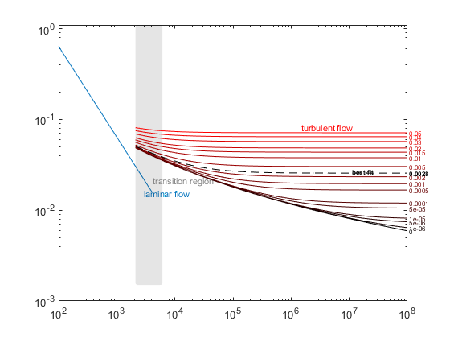
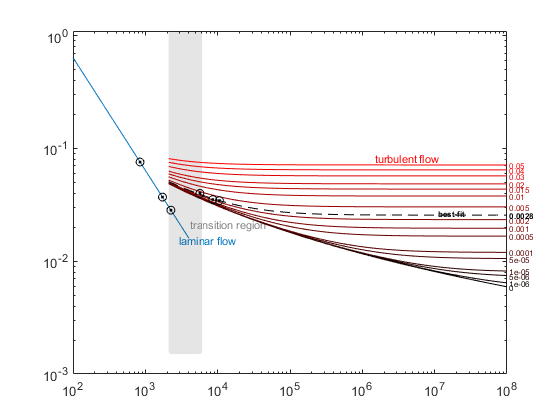
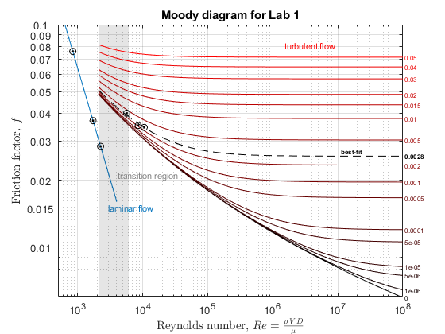

Contents
clear;
Set up friction factor calculation for laminar flow
ReiL = logspace(2,log10(4000),10);
fiL = 64./ReiL;
Set up Darcy-Weisbach friction factor calculation
rriT = [0e-6, 1e-6, 5e-6, 1e-5 5e-5, 1e-4, 5e-4, ...
.001, .002, .005, .01, .015, .02, .03, .04, .05];
ReiT = logspace(log10(2100), 8, 100);
fiT = zeros(length(ReiT), length(rriT));
for i = 1:length(ReiT),
for j = 1:length(rriT),
fiT(i,j) = fzero(@(f) 1/sqrt(f)+2*log10(rriT(j)/3.71+2.51/(ReiT(i)*sqrt(f))),[eps,1]);
end
end
Calculations on lab data
L = 0.524;
D = 0.003;
A = 0.785*D^2;
nu = 1e-6;
rhoHg = 13550;
rhoW = 1000;
data = readtable('Lab1_Data.xlsx');
H = data.Head_in * 2.54/100;
Q = (data.Vol_ml ./ 1e6) ./ data.Time_sec ;
V = Q/A;
Re = V*D/nu;
f = zeros(6,1);
for i=1:3,
f(i) = 64./Re(i);
end
for i=4:6,
f(i) = ( 2*9.81*D*H(i) )/( L*V(i)^2 ) * (rhoHg/rhoW - 1);
end
results = table(H, Re, f)
results =
6×3 table
H Re f
_______ ______ ________
0.00508 844.02 0.075827
0.01016 1726.8 0.037062
0.01524 2255.1 0.028381
0.1016 5676.9 0.039999
0.2032 8554.2 0.035233
0.3048 10584 0.034522
Best-fit line through lab data
rriF = linspace(0.001, 0.003, 11);
fF = zeros(length(rriF), 6);
for k=1:length(rriF),
for m=4:6,
fF(k,m) = fzero(@(f) 1/sqrt(f)+2*log10(rriF(k)/3.71+2.51/(Re(m)*sqrt(f))),[eps,1]);
end
end
fF = fF(:,4:6);
bestfittests = [rriF' sum(bsxfun(@minus,f(4:6)',fF).^2, 2)*1e5]
indexbest = find(bestfittests(:,2)==min(bestfittests(:,2)));
rri_best = bestfittests(indexbest,1);
fprintf(['Best-fit value of relative pipe roughness e/D = ' num2str(rri_best) '\n'])
fprintf(['Sum of squares of residuals in f @ best-fit value = ' num2str(bestfittests(indexbest,2)) '\n'])
f_best = zeros(100,1);
for i=1:100,
f_best(i) = fzero(@(f) 1/sqrt(f)+2*log10(rri_best/3.71+2.51/(ReiT(i)*sqrt(f))),[eps,1]);
end
bestfittests =
0.0010 1.6970
0.0012 1.3519
0.0014 1.0520
0.0016 0.7957
0.0018 0.5819
0.0020 0.4093
0.0022 0.2769
0.0024 0.1834
0.0026 0.1280
0.0028 0.1095
0.0030 0.1271
Best-fit value of relative pipe roughness e/D = 0.0028
Sum of squares of residuals in f @ best-fit value = 0.10951
Plot Moody diagram with Darcy-Weisbach friction factor
figure(1); clf;
loglog(ReiL, fiL, 'color', [0, 0.4470, 0.7410])
text(2.9e3, 0.015, 'laminar flow', ...
'FontSize', 8, ...
'Color', [0, 0.4470, 0.7410])
rectangle('Position', [2100, 0.0015, 4000, 1.10], ...
'Curvature', 0.2, ...
'FaceColor', [0, 0, 0, 0.1], ...
'EdgeColor', [0, 0, 0, 0.0]);
text(4.1e3, 0.021, 'transition region', ...
'FontSize', 8, ...
'Color', [0.5, 0.5, 0.5])
hold on;
redMap = [linspace(0, 255, length(rriT))', zeros(length(rriT), 1), zeros(length(rriT), 1)]./255;
for j = 1:length(rriT),
plot(ReiT, fiT(:,j), 'color', redMap(j,:))
text(1e8, fiT(end,j), [' ' num2str(rriT(j),'%g')], ...
'FontSize', 6, ...
'Color', redMap(j,:), ...
'VerticalAlign', 'middle', ...
'HorizontalAlign', 'left')
end
text(1.5e6, 0.08, 'turbulent flow', ...
'FontSize', 8, ...
'Color', 'r')
plot(ReiT, f_best, 'k--')
text(1e8, f_best(end), [' ' num2str(rri_best,'%g')], ...
'FontSize', 6, ...
'Color', 'black', ...
'FontWeight', 'bold', ...
'VerticalAlign', 'middle', ...
'HorizontalAlign', 'left')
text(1.1e7, 0.027, 'best-fit', ...
'FontSize', 6, ...
'FontWeight', 'bold', ...
'Color', 'k')

Plot data
plot(Re, f, 'k.')
plot(Re, f, 'ko')

Format plot
ax = gca();
ax.YAxis.Exponent = 0;
yticks([0.01, 0.015, 0.02, 0.03, 0.04, 0.05, 0.06, 0.07, 0.08, 0.09, 0.1])
yticks = get(gca,'YTick');
set(gca,'YTickLabel',yticks);
ylim([0.006 0.1])
xlim([5e2 1e8])
grid on
xlabel('Reynolds number, $ Re = \frac{\rho\, VD}{\mu}$', 'interpreter', 'latex')
ylabel('Friction factor, $f$', 'interpreter', 'latex')
title('Moody diagram for Lab 1')
